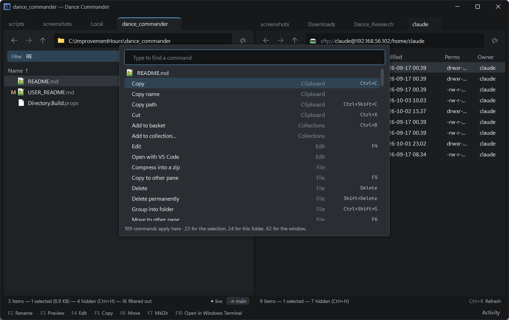

Keyboard reference
Commander keys where they don't fight Windows, browser keys where a browser already taught you. Every key here is also in the command palette (Ctrl+Shift+P), and holding a modifier shows its layer on the legend. These are the keys it comes with; any of them can be changed.

Files
| Enter | Open: go into a folder or archive, start a file in its application |
| Ctrl+Enter | Open in a new tab |
| F2 | Rename, in place |
| F3 | Preview; F3 or Esc closes it |
| F4 | Edit: text in whatever opens your .txt files, anything else in Windows' own “Edit”. It never runs the file |
| Shift+F4 | New file: name it, and it is made empty here and opened as F4 opens one. A file of that name already here is opened as it is |
| Shift+Enter | Run the script or program under the cursor through the command line, with its output in the pane |
| F5 | Copy to the other pane |
| F6 | Move to the other pane |
| F7 | New folder |
| Del | Delete to the Recycle Bin |
| Shift+Del | Delete permanently |
| Ctrl+Shift+G | Group the selection into a new folder |
| Ctrl+Z | Undo the last operation |
| Ctrl+C / X / V | Copy, cut and paste through the Windows clipboard. Pasting an image or text makes a new file of it |
| Ctrl+Shift+C | Copy path |
| Ctrl+Shift+Enter | Open containing folder (from a search, a flattened tree or a collection) |
Marking and selection
| Insert or Space | Mark or unmark the row and move down |
| ↑ ↓ PgUp PgDn Home End | Move the cursor. While anything is marked, the marks stay put |
| Shift+arrows | Extend the selection |
| Ctrl+A | Select all |
| Ctrl+I | Invert the selection |
| Ctrl+Shift+A | Unmark all |
| Esc | Close what is open (a preview, a question, the filter), then unmark |
Enter, F2 and F3 act on the row under the cursor; F5, F6 and Del act on the marked rows.
Getting around
| Tab | Switch pane |
| Backspace | Up to the parent folder (up from a drive goes to about:computer) |
| Alt+← / Alt+→ | Back and forward. The mouse's back and forward buttons work too |
| Ctrl+L | Go to a location: the address bar. Pressed again there, it selects everything in it, as in a browser |
| Alt+Home | This computer (about:computer) |
| Ctrl+Shift+O | Bookmarks (about:bookmarks) |
| Ctrl+Shift+H | History (about:history) |
| Ctrl+D | Bookmark this location |
| Ctrl+R | Refresh |
| Ctrl+. | This folder's commands (the location chip's menu) |
| Shift+F10 or the Menu key | The right-click menu, for what the keyboard is on: the marked rows, or else the folder |
| Ctrl+E | Run a command here (the command line) |
| Ctrl+Shift+B | A shell here: Git Bash in a local folder, if it is installed, or the server's own shell on an SFTP server |
| Ctrl+Shift+P | Command palette |
| Ctrl+, | Settings |
Tabs and panes
| Ctrl+T | New tab, at the same place |
| Ctrl+W | Close tab |
| Ctrl+PgDn / Ctrl+PgUp | Next and previous tab |
| Ctrl+Tab | Cycle through tabs |
| Ctrl+Shift+PgUp / PgDn | Move the tab one place left or right along the strip |
| Ctrl+Alt+← / → | Move the tab to the left or right pane |
| Ctrl+1 / Ctrl+2 | One pane, two panes. With one pane, Tab swaps which pane is on screen |
View, search and sorting
| just type | Quick filter: narrow the listing to names that match. Backspace deletes, Esc clears |
| Ctrl+S | Search here, through every folder below |
| Ctrl+Shift+F | Flatten this tree: every file below, in one listing |
| Ctrl+H | Show or hide hidden entries and dotfiles |
| Ctrl+F3 | Sort by name |
| Ctrl+F4 | Sort by type |
| Ctrl+F5 | Sort by date |
| Ctrl+F6 | Sort by size. Pressing the same sort key again reverses it |
Shelf and collections
| Ctrl+B | Put the selection on the shelf |
| Win+Shift+B | Show or hide the shelf window (the shelf in a small window that stays on top), from any program |
If another program already holds Win+Shift+B, the application says so, and the window is still in the palette as Show or hide the shelf window.
On the application's own pages some keys take a meaning of their own: in a collection or the
shelf Del takes the file out of the list and never touches it on disk, and
F7 makes a new collection or saves the shelf as one. On about:bookmarks,
F2 renames a bookmark, F6 moves it to a group and Del removes it;
on about:history, Del forgets a visit. See
Marks, shelf, collections.
The mouse
| Middle click on a folder or archive | Opens it in a new tab, as in a browser. Settings can make it open in the other pane instead |
| The mouse's back and forward buttons | Back and forward |
| Holding Back, Forward or Up | A list of where they would go, to jump several steps at once. Right-clicking Back or Forward does the same |
| Dragging a tab | Along its strip to reorder it, or onto the other pane to move it there |
| Dragging files | Between the panes, onto a folder, or to and from Explorer. Held over a tab or a folder for a moment, it opens |
Changing keys
The Keyboard page of Settings (Ctrl+,) lists every command with its key. Click the key, then press the one you want; Esc cancels. Remove leaves a command without a key, and Reset gives it back its own. The filters at the top show all commands, only the ones you have changed (Yours), or only those with something to note (Clashes).
A key you choose wins over any command that had it. Nothing is refused: the command that lost the key is left without one, and the page says so beside both. It also warns when the key you chose means something else in most programs, such as Ctrl+Shift+A for “select none”. The legend, the menus and the palette follow the new key at once.
Your keys are kept in settings.json, by command id, and can be written there by hand
too:
{ "keys": { "dc.search": "Ctrl+F", "dc.copyPath": null } }null takes a key away. The search box on the Keyboard page finds a command by its
id as well as its name.
Win+Shift+B is the one key that can't be changed: it belongs to Windows as a whole, not to the window.
Keys for your own tools
A tool in tools.json can claim a key with "keybinding": "Ctrl+Shift+K".
The Git Bash tools' Open in bash has Ctrl+Shift+B. A
tool's key takes over a built-in command's, and the takeover is written to the log at startup so a
collision never goes unnoticed. Tools are on the Keyboard page too, and a key chosen there wins over
the one in tools.json.